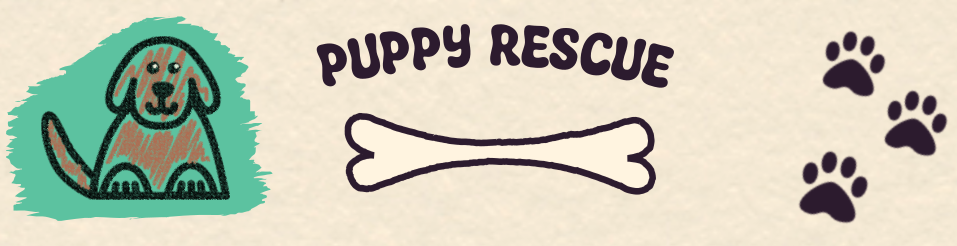

Puppy Rescue won the 2023 Hathora game Jam

In August I participated in the Multiplayer Madness organised by Hathora (the full results can be found here). I just had some very rougth knowledge of multiplayer game creation but using Godot 4 mutiplayer api made it really smooth.
I wanted to make a coop non violent game with simplified graphics and I am quite happy with the results after 9 intensive days of game creation.
And it paid off because the game ended N°1 of the game jam :)
You can try the game on itch.io, it is still quite rougth and I do plan on realeasing a improved version later down the line: